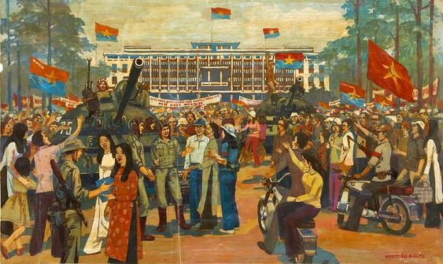
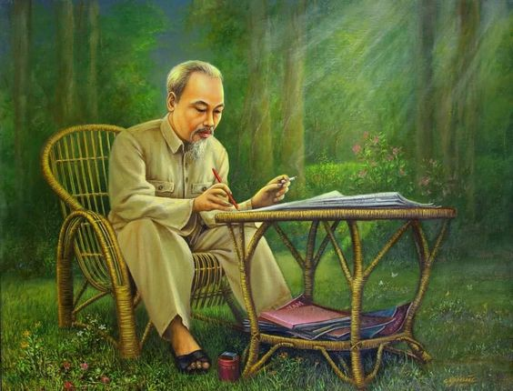

Die Geschichte Vietnams ist eine reiche und vielfältige Reise, von den frühen Zeiten der antiken vietnamesischen Stämme über die feudale Ära mit königlichen Dynastien, bis hin zu den Kriegen um Unabhängigkeit und Vereinigung und anschließend den friedlichen und entwicklungsreichen Zeiten im 20. Jahrhundert.
Die Geschichte Vietnams ist geprägt von kultureller Vielfalt, Innovation und dem Einfluss benachbarter Länder und westlicher Nationen. Das Land hat viele Höhen und Tiefen erlebt, von der antiken Zeit mit feudalen Königreichen wie Văn Lang, Âu Lạc, Đại Việt bis hin zur Konfrontation mit ausländischen Mächten wie China, Mongolei, Frankreich, Japan und den USA.
Bác Hồ, auch bekannt als Präsident Hồ Chí Minh, war ein bedeutender Führer des vietnamesischen Volkes und der Gründer und Leiter der Kommunistischen Partei Vietnams sowie ein Vorreiter im Kampf für die Unabhängigkeit, Freiheit und Souveränität Vietnams. Er widmete sein ganzes Leben der revolutionären Sache, angefangen mit der Beteiligung an den Rettungsbewegungen und dem Kampf gegen die französische Kolonialherrschaft im 20. Jahrhundert. Er stand an der Spitze der Viet Minh-Bewegung, die Vorreiterrolle im Kampf gegen Frankreich und später im Kampf gegen die USA im Vietnamkrieg spielte.
Mit Gedanken der Solidarität, Demokratie und unerschütterlichem Engagement gewann Bác Hồ das Vertrauen und die Liebe des vietnamesischen Volkes sowie den Respekt der internationalen Gemeinschaft. Bis heute wird sein Bild nicht nur in Vietnam, sondern auf der ganzen Welt geehrt und respektiert, als Symbol für Ausdauer, nationalen Geist und Patriotismus
